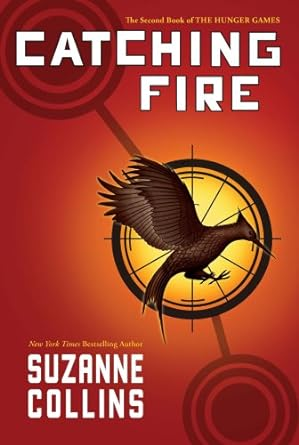

Catching Fire
Após saírem vencedores da última edição dos Jogos Vorazes, as atitudes desafiadoras de Katniss e Peeta acabam inspirando uma rebelião contra a opressiva Capital. No entanto, os dois são obrigados a participarem de uma edição especial do torneio, o Massacre Quaternário, que acontece apenas a cada 25 anos, e reúne vencedores das edições anteriores.

Aperto o cantil com firmeza em minhas mãos, muito embora a quentura do chá já tenha se
dissipado há muito no ar gelado. Meus músculos estão rígidos devido ao frio. Se uma matilha
de cães selvagens aparecer nesse instante, as chances de escalar uma árvore antes de eles
atacarem são francamente desfavoráveis. Eu deveria me levantar, dar uma circulada, e tentar
anular a rigidez de meus membros. Mas em vez disso, mantenho-me sentada, imóvel como a
rocha que está embaixo de mim, enquanto o amanhecer começa a iluminar a floresta. Não
tenho como lutar contra o sol. Posso apenas observar impotentemente como ele me carrega
em direção a um dia que tenho abominado há meses.
Por volta do meio-dia eles estarão na minha nova casa na Aldeia dos Vitoriosos. Os
repórteres, as equipes com as câmeras, até mesmo Effie Trinket, minha antiga acompanhante,
terão se dirigido ao Distrito 12, vindos da Capital. Imagino se Effie ainda estará usando aquela
ridícula peruca cor-de-rosa, ou se estará com alguma outra cor artificial especialmente para a
Turnê da Vitória. Haverá outras pessoas esperando também. Uma equipe encarregada de
cuidar de todas as minhas necessidades na longa viagem de trem. Uma equipe de preparação
encarregada de me embelezar para as aparições públicas. Cinna, meu estilista e amigo, que
desenhou o esplêndido traje que fez com que a audiência reparasse em mim pela primeira vez
nos Jogos Vorazes.
Se pudesse escolher, tentaria esquecer por completo os Jogos Vorazes. Jamais falaria
neles. Fingiria que não eram nada além de um sonho ruim. Mas a Turnê da Vitória torna isso
impossível. Estrategicamente situada quase que entre um Jogo e outro, ela é uma maneira de
manter o horror vivo e presente. Não apenas nós, residentes dos distritos, somos forçados a
nos lembrar da mão de ferro do poder da Capital a cada ano, como também somos forçados
a comemorá-la. E esse ano eu terei de viajar de distrito em distrito para aparecer diante das
multidões entusiasmadas, que secretamente me odeiam, para olhar bem nos rostos dos
familiares cujos filhos eu matei...